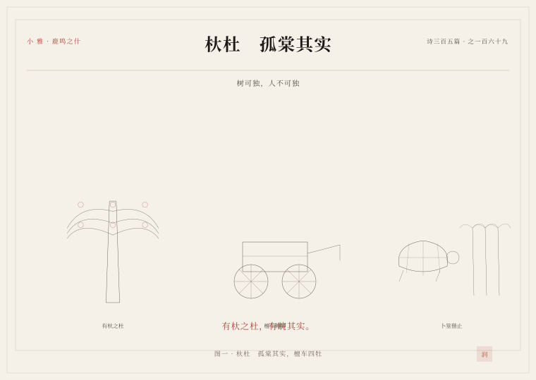
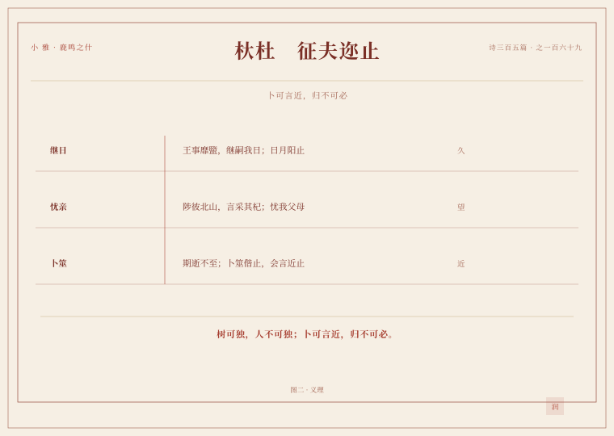

第一百六十九篇 杕杜
小雅 · 鹿鸣之什 SJ169
朗读 · 普通话
依经文原文朗读，章次不读出；配古琴底乐，不改速、不加拖腔。全库同一音色（豆包 TTS），非播音员录制。
一 解题
诗三判：
- 谁在说：征夫之妇，或劳还役者。见孤生的杜树，果实睆然；王事靡盬，日月继嗣；征夫不至，卜筮皆言近。
- 说什么事：四章。前二章以杕杜起，写「继嗣我日」「征夫遑止」「征夫归止」；三章写登北山采杞、檀车四牡；四章写卜筮。
- 为何编在此：采薇遣戍，出车劳还，杕杜勤归；三篇一组，遣、劳、归俱全。
《毛序》：「《杕杜》，劳还役也。」
朱子《诗集传》：「兴也。杕，独也。杜，赤棠也。睆，实貌。王事靡盬，继嗣我日，言日月相继而不已也。阳，十月也。遑，暇也。」二章：「萋萋，盛貌。杞，枸杞也。」三章：「幝幝，车敝貌。痯痯，疲貌。」四章：「匪载匪来，言不载不归也。期逝，过期也。恤，忧也。卜筮，占也。会，合也。迩，近也。」
本库的看法：《杕杜》不是一首怨妇诗，是一首「以卜筮托归期」的诗。
孤杜独立，是「独」；果实睆然，是「有待」。日月相继，是「久」；檀车幝幝，四牡痯痯，是「疲」。末章卜筮皆言「近」，而征夫仍未至：不是不知归期，是不敢信归期。
须辨：杕是独，不是大树；杜是赤棠，不是杜仲；睆是实貌，不是眼；继嗣我日是天日相继，不是继嗣宗族；会言是合言，不是会面。断语：树可独，人不可独；卜可言近，归不可必。
先辨五事：「杕」是独生，不是大树；「杜」是赤棠，不是杜仲；「睆」是果实圆实貌，不是眼目；「继嗣我日」是日月相继，不是继嗣宗族；「会言」是合卜之言，不是会面之言。
二 经文
第一章
有杕之杜，有睆其实。王事靡盬，继嗣我日。
日月阳止，女心伤止，征夫遑止。
第二章
有杕之杜，其叶萋萋。王事靡盬，我心伤悲。
卉木萋止，女心悲止，征夫归止。
第三章
陟彼北山，言采其杞。王事靡盬，忧我父母。
檀车幝幝，四牡痯痯，征夫不远。
第四章
匪载匪来，忧心孔疚。期逝不至，而多为恤。
卜筮偕止，会言近止，征夫迩止。
三 韵读
- 一章：杜、实、日、阳、伤、遑，鱼、质、阳交错。声独而长。
- 二章：杜、萋、悲、萋、悲、归，鱼、脂相叶。声悲。
- 三章：杞、母、幝、痯、远，之、元相叶。声疲。
- 四章：来、疚、恤、筮、近、迩，之、质、文相叶。声切而近。
读法：四章六「止」字，一章三「止」，二章三「止」，四章三「止」；「止」是语辞，也是「止而不归」。
声愈收愈近，而人愈近愈不至。
四 字义与名物
- 杕：独生。杜：赤棠。睆：果实圆实貌。靡盬：无止息。继嗣我日：日月相继。阳：十月。遑：暇。
- 萋萋：茂盛。卉木：草木。归：归家。
- 陟：登。北山：北面的山。杞：枸杞。忧我父母：使父母忧。檀车：檀木车。幝幝：车敝。痯痯：疲病。不远：不远。
- 匪载匪来：不载不归。疚：病。期逝：过期。恤：忧。卜筮：龟卜蓍筮。偕：俱。会言：合言。迩：近。
五 今译
一章：孤生的赤棠，果实圆圆。王事不止，日月相继。十月已到，女子心伤，征夫无暇。
二章：孤生的赤棠，叶子茂盛。王事不止，我心伤悲。草木茂盛，女子心悲，征夫该归。
三章：登上那北山，采那枸杞。王事不止，使我父母忧。檀车敝坏，四牡疲病，征夫不远。
四章：不载不归，忧心大病。过期不至，更加忧愁。卜筮都说，合言已近，征夫已近。
六 章旨
- 一章：杕杜其实，是「有待」；日月阳止，是「岁晚」；「征夫遑止」，是问其何暇而归。
- 二章：杜叶萋萋，是「春盛」；征夫归止，是「望其归」；由实到叶，由秋到春，望愈久。
- 三章：登北山采杞，是「望远」；檀车痯痯，是「见其疲」；「征夫不远」，是自我安慰。
- 四章：匪载匪来，是「不至」；卜筮言近，是「托」；以近收远，愈近愈痛。
七 诗教
- 等待有礼：不怨征夫，不怨王事，只以卜筮问归；怨而不怒，是妇德之厚。
- 卜筮不是迷信：卜筮是「无所告而告于神」，是人在无定时求一个可依之期；诗写其诚，不写其验。
- 「不远」「迩」有分寸：三章说「不远」，四章说「迩」，都是「将近」；不说「已归」，是诗之诚。
八 分寸与边界
- 不把「杕」读成大树：杕是独生；读成大，则「独」义失。
- 不把「杜」读成杜仲：杜是赤棠；认错木，则「实」无据。
- 不把「睆」读成眼：睆是实貌；读成眼，则「其实」成目。
- 不把「继嗣我日」读成继嗣宗族：是日月相继；读成宗族，则王事与家事混。
- 不把「会言」读成会面：是合卜之言；读成会面，则卜筮无着。
九 存疑
- 诗旨：毛序「劳还役」，朱子从之；一说「室家思征夫」。本库从劳还，兼取思妇之辞。
- 「睆」：毛传「实貌」；一说「明」。从实貌。
- 「杞」：毛传「枸杞」；一说「杞树」。从枸杞。
- 「会言」：毛传「会，合也」；一说「会，会计」。从合言。
- 「征夫迩止」：一说已归，一说将近。从将近。
十 跨典
- 《诗经·小雅·采薇》「曰归曰归」；此篇「征夫归止」，同是归期难必。
- 《礼记》「卜筮者，先圣王之所以使民信时日」；此篇卜筮言近，是信时而不得。
- 《孟子》「父母之爱」；此篇「忧我父母」，是征役连累父母。
十一 双卡与图
六对：
| 杕（独生） |
杕（大树） |
| 杜（赤棠） |
杜（杜仲） |
| 睆（实貌） |
睆（眼） |
| 继嗣我日（日月相继） |
继嗣我日（继嗣宗族） |
| 会言（合卜言） |
会言（会面） |
| 迩（将近） |
迩（已归） |

图一 · 杕杜 孤棠其实，檀车四牡

图二 · 杕杜 卜筮言近，征夫迩止